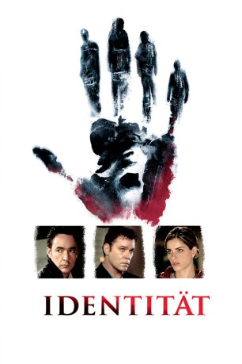

#110 Identität - Identity
Alternativ: Identity
 
 IMDB-Wertung: 7.3 / 10
IMDB-Wertung: 7.3 / 10  Metascore: 64
Metascore: 64 
Eine Gruppe einander unbekannter Menschen findet bei einem Unwetter Zuflucht in einem Motel. Kurz darauf wird eine Person der Gruppe tot aufgefunden – der Beginn einer Mordserie eines offenbar methodisch vorgehenden Killers. Während die Überlebenden versuchen den Mörder zu überführen, bemerken sie eine seltsame Verbindung zueinander.
Jahr: 2003
Dauer: 90 Minuten
FSK: 16
Land: USA Studio: Columbia PicturesTonspuren: DD5.1 - ,
Untertitel:
Auflösung: 1080p (1920×800) Größe: 8140 MB
Genre: Mystery, Thriller
Regisseur:  James Mangold
James Mangold
Drehbuch: Michael Cooney
Soundtrack: Alan Silvestri
Darsteller:
Datei: X:\2003(G-M)\Identität - Identity (2003, FSK16, 1920x800).mkv seit 03.02.2015
Festplatte: HD 2003-2004-2005(A-F)
 Es gibt insgesamt 33 Filme in der Gruppe '2003(G-M)'
Es gibt insgesamt 33 Filme in der Gruppe '2003(G-M)'